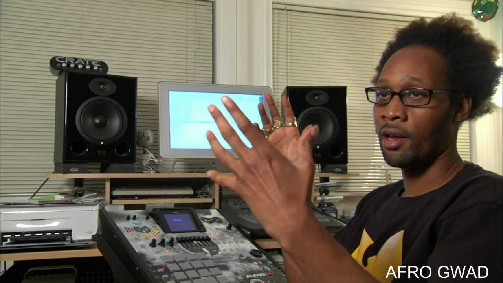
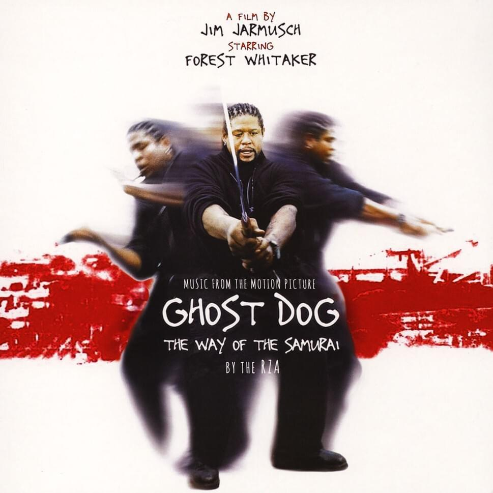
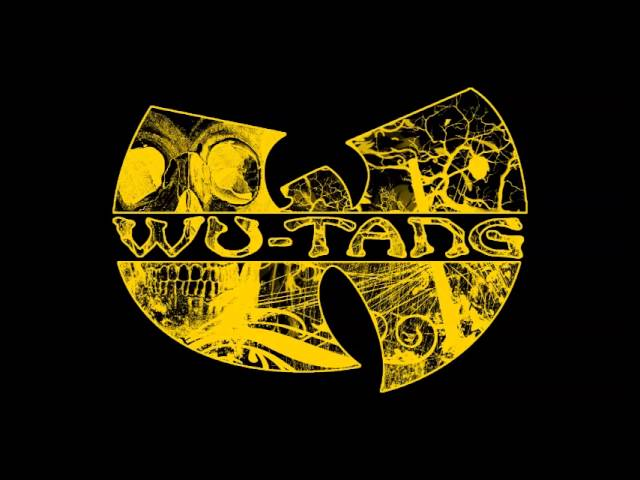
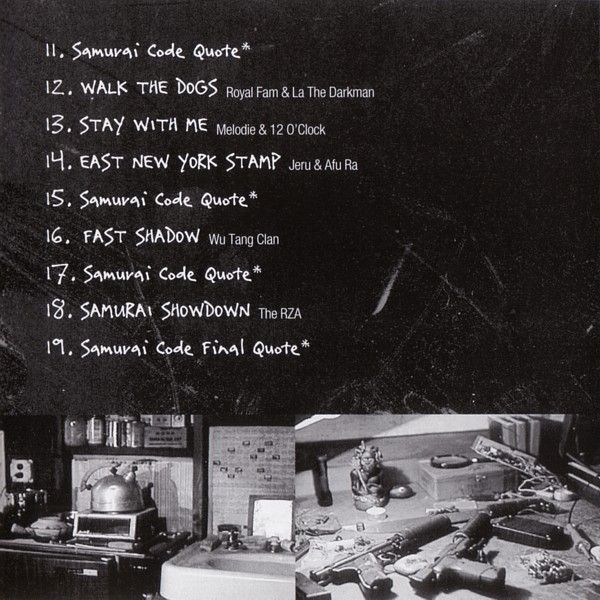
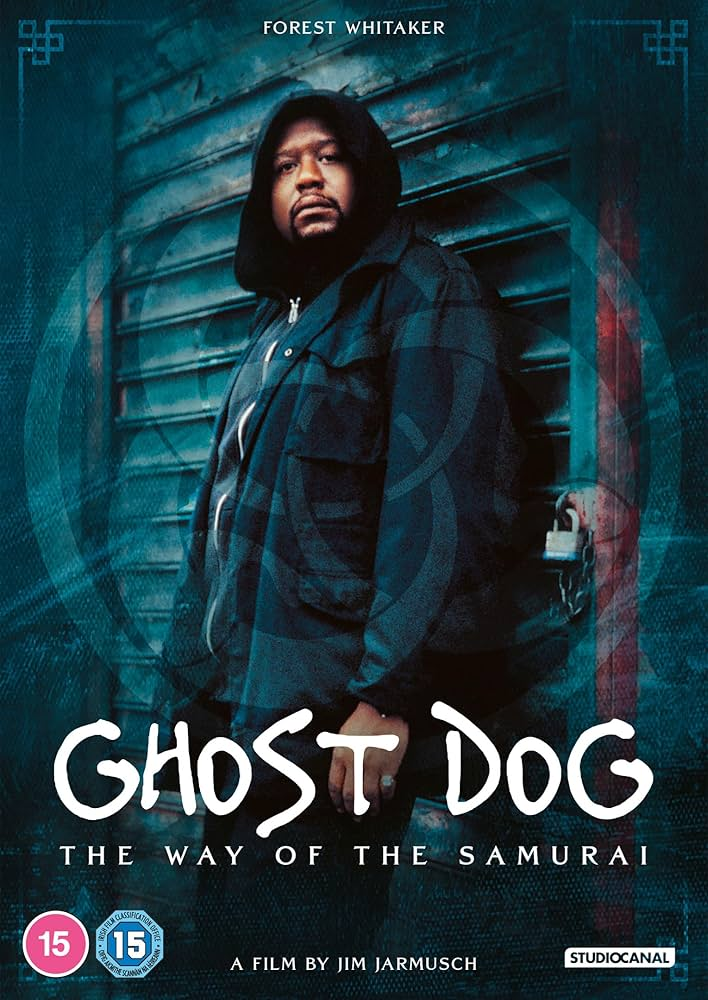
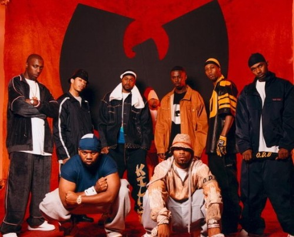

Parfois, la rencontre de deux univers que tout oppose crée une alchimie parfaite. En 1999, une telle magie opère : l'énergie brute et mystique du Wu-Tang Clan percute le cinéma contemplatif et poétique de Jim Jarmusch. Le résultat est "Ghost Dog: The Way of the Samurai", un film culte dont le cœur battant est une bande-son révolutionnaire, portée par le projet **Wu Stallion** et orchestrée par le maître **RZA**.
Genèse d'une Collaboration Mythique

L'histoire de Wu Stallion est celle d'une vision. Le réalisateur **Jim Jarmusch**, fasciné par l'univers du Wu-Tang, contacte **RZA**, l'architecte sonore du groupe, pour une mission inédite : non pas fournir des chansons, mais composer la *totalité* de la bande originale du film. RZA ne se contente pas de livrer des beats, il devient un personnage à part entière du film, créant le paysage sonore dans lequel évolue Ghost Dog, l'assassin philosophe incarné par **Forest Whitaker**.
Le nom "Wu Stallion" est un clin d'œil à cette collaboration. Il représente la puissance du "Wu" appliquée à un projet singulier, noble et puissant comme un étalon (Stallion). Le résultat est une bande-son unique, à la fois sombre, méditative et imprégnée de la philosophie du samouraï, où les productions de RZA deviennent le monologue intérieur du personnage principal.
Les Pistes Clés : L'Âme du Samouraï
Plus qu'une collection de titres, cet album est un voyage atmosphérique, marqué par des moments inoubliables.

"Ghost Dog Theme"
Le battement de cœur du film. Un instrumental lo-fi, hypnotique et mélancolique qui capture parfaitement la solitude et la détermination du personnage.

"Fast Shadow"
Une des rares pistes avec des paroles, portée par un couplet glacial et précis de **Masta Killa**. La quintessence du style "lyrical swordsman" du Wu-Tang.

"Samurai Code Quote"
Les interludes où **Forest Whitaker** récite des extraits du Hagakure, le code du samouraï. Ces moments donnent à l'album sa profondeur philosophique unique.
RZA : L'Architecte Sonore à l'Œuvre
Ce projet a révélé une nouvelle facette du génie de RZA.

La Bande-Son comme Personnage
Contrairement aux albums classiques du Wu-Tang, souvent agressifs et denses, la musique de "Ghost Dog" est minimaliste, sombre et introspective. **RZA** utilise des boucles courtes, des samples granuleux et des rythmes discrets pour créer une atmosphère pesante. Il a prouvé qu'il n'était pas seulement un producteur de hip-hop, mais un véritable compositeur de film, capable de traduire des émotions complexes en son. Ce projet a ouvert la voie à ses futures collaborations avec des réalisateurs comme Quentin Tarantino.
Les Jalons d'une Œuvre Culte
- A défini un nouveau standard pour les bandes originales de films indépendants.
- A solidifié le statut de RZA comme l'un des producteurs les plus polyvalents et visionnaires.
- A créé un pont inédit entre le hip-hop underground et le cinéma d'art et d'essai.
- Devenu un classique culte, chéri par les cinéphiles et les fans de hip-hop pour son atmosphère unique.
- Influence majeure sur le mouvement lo-fi hip-hop des décennies suivantes.
Les Visages du Projet
Pour trouver des images, cherchez les noms de ces artisans clés.

Plus qu'une B.O., un Testament
"Ghost Dog: The Album" n'est pas un album que l'on écoute en fond sonore. C'est une œuvre d'art totale, une expérience immersive qui ne peut être séparée du film qu'elle habite. C'est le testament de la vision de RZA, capable de transformer la poussière des vinyles et la philosophie des samouraïs en un chef-d'œuvre sonore intemporel.